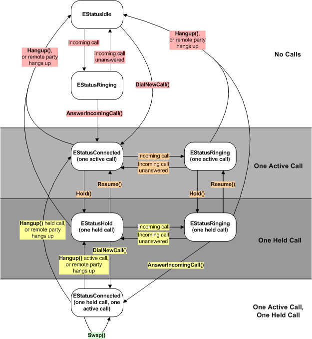

Simultaneous
Call Tutorial
This tutorial describes how to handle two call with the telephony
API for applications.
This state diagram shows how to dial or answer one or two calls
at a time.
Figure 1. Simultaneous Call State Diagram

The boxes are states. The enumeration value in each box is the status
of the voice line. Voice
line status describes these states and their meaning. The arrows show
events that trigger a change of state. In these events, a word in bold indicates
a CTelephony method that you can call.
check the Voice
line status for other calls
if the line is Idle (CTelephony::EStatusIdle)
then no calls are in progress
if the line is on
hold (CTelephony::EStatusHold) then there is another
call in progress, but it is on hold and you can still dial or answer a second
call. Now go to point four below
if another call is active,
you must wait until it completes before you can dial or receive a call.
Dial a call
while no calls are in progress, the line's status is CTelephony::EStatusIdle.
To dial a call, use CTelephony::DialNewCall(). If dialling
was successful and the remote party answers the call then the line's status
will become CTelephony::EStatusConnected.
Answer a call
while no calls are in progress, the line's status is CTelephony::EStatusIdle.
When a remote party calls your phone, the voice line's status will change
to CTelephony::EStatusRinging.
When the status is CTelephony::EStatusRinging, use CTelephony::AnswerIncomingCall() to
answer the call. The status will change to CTelephony::EStatusConnected and
the phone user can talk to the remote party.
Terminate the
call
detect Remote
Termination of a call
Hold a Call
Resume a call
Send DTMF tones
down the line
Line and call
information
Answer
a second call
at some point, a remote party might try to ring your phone. It is answered
in the same way as the first
The voice line state will change to CTelephony::EStatusRinging.
You can receive notification when this occurs; see Detect
an incoming call. Before answering the second call, you must put the
original call on hold. This is shown in the diagram above.
Dial
a second call
you can also dial a second call in the same way as the first. Once again,
you must put your original call on hold before dialling the second call
a CTelephony::TCallId will be given to you when you
successfully connect a second call. You will also have a CTelephony::TCallId from
the first call. Now you will be the owner of two calls: at any one time, one
will always be active and one will always be on hold.
Now you can:
Copyright ©2010 Nokia Corporation and/or its subsidiary(-ies).
All rights
reserved. Unless otherwise stated, these materials are provided under the terms of the Eclipse Public License
v1.0.